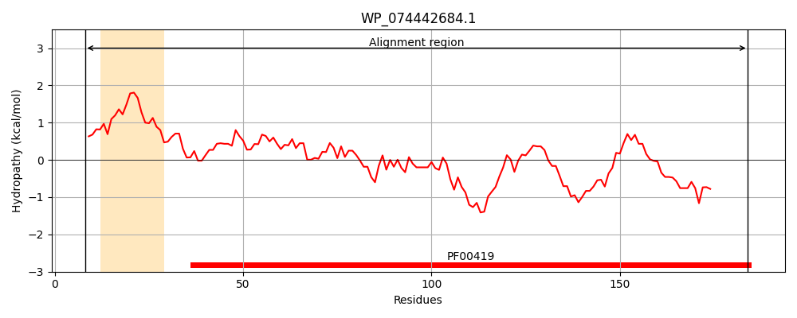
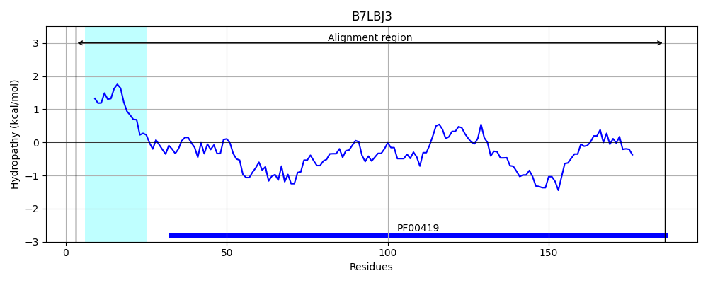
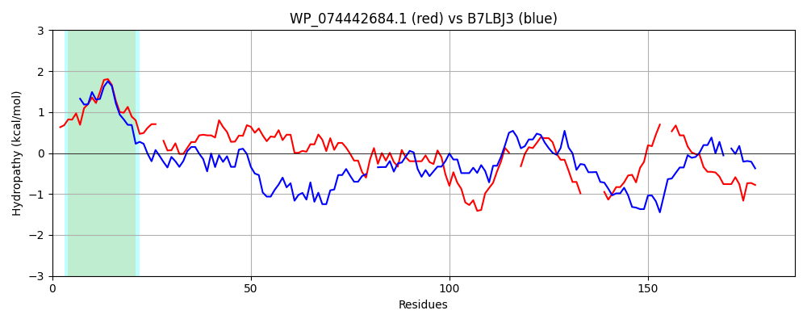

Hit Accession: B7LBJ3
Hit TCID: 1.C.80.1.3
Hit Description: gnl|BL_ORD_ID|2031 gnl|TC-DB|B7LBJ3|1.C.80.1.3 Putative fimbrial-like adhesin exported protein OS=Escherichia coli (strain 55989 / EAEC) GN=yfcV PE=4 SV=1
Mach Len: 187
e:0.000000
Query TMS Count : 1
Hit TMS Count: 1
TMS-Overlap Score: 0.900000
Predicted Substrates:CHEBI:24870;ion, CHEBI:25367;molecule
BLAST Alignment:
Score: 133 , Bit scores: 55 bits, E-value: 4.4e-10, Alignment length: 187, Percentage identity: 26
Query: 8 KMSKKILAGALIFSACSVLSTVAQADN-TITFNGVVSDTTCTATIDGGVTAIDMGTTSVADLKAYTFGAAKNFSFSLADCPTAEDGGNSIARVTFGGVSDTANSDYFKNQATDEPA--TGVAVALFDEAGKVMK-----NNEEGSDVDISSGAA--TIPFTVKMVKSGDTDPTKGTVQTTVTYNVTY 184
K K +A A++ + +T+A +N T F G + D+ C+ D +DMG LK K+F L DC D ++ G VS + +Y+ TD A V++A+ D G K + + D + G A T+ F +V + D P G + T+ +TY
Sbjct: 3 KFVKTAIAAAMVMGVFTSTATIAAGNNGTARFYGTIEDSVCSIVPDDHKLEVDMGDIGAEKLKNNGTTTPKSFQIRLQDC--VFDTQETMTTTFTGTVSSANSGNYYTIFNTDTGAAFNNVSLAIGDSLGTSYKSGMGIDQKIVKDTSTNKGKAKQTLNFKAWLVGAADA-PDLGNFEANTTFQITY 186 | Protein Hydropathy Plots: |
|---|
|  |  |
Pairwise Alignment-Hydropathy Plot:
|
|---|
|  |